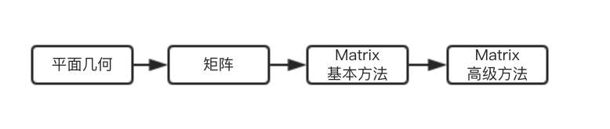
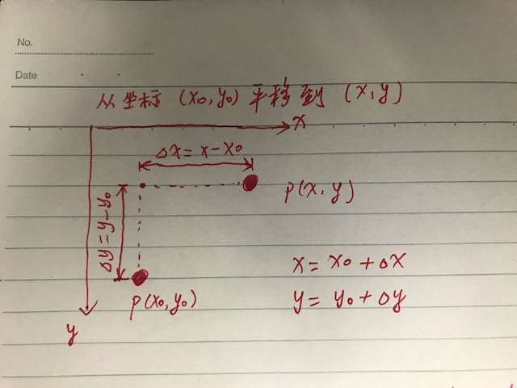
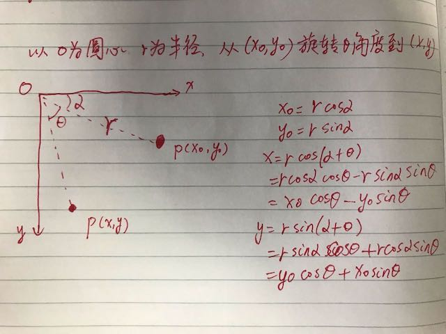
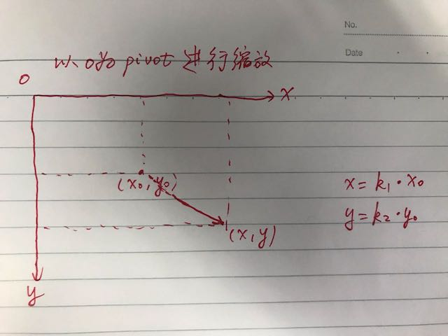
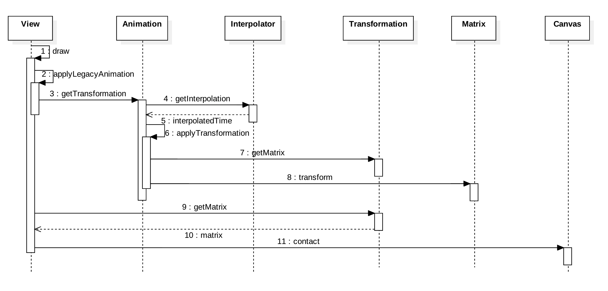
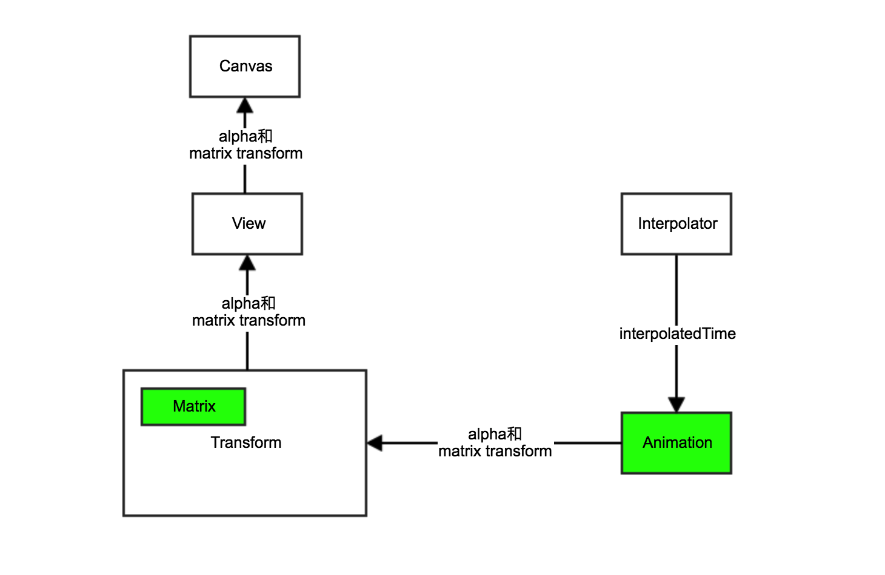

Android的View Animation是如何实现的？
Android中的Tween动画由android.view.animation包实现。网上很容易找到Animation相关API的用法，那么背后的原理是什么样的呢？
我们由浅入深一步步来看。

几何与矩阵
参考自Android Matrix图形变换和深入理解 Android 中的 Matrix
可以从几何的角度考虑平面中的平移，旋转，缩放以及错切。前三者分别见下图：



引入矩阵(3x3矩阵)可简化并且统一上图中的方程式。为了便于表示，先将(x0, y0)和(x, y)从二维作扩展成三维：
- (x0, y0)写作矩阵X0 (x0, y0, 1)
- (x, y)写作矩阵X (x, y, 1)
所以原来的方程写成如下形式：
X = C * X0
其中，X0矩阵是变换前的点的位置，X矩阵是变换后的点的位置，C是变换矩阵。C的定义如下：
1 | [ a b c |
不难求出进行平移变换时C的值：
1 | [ 1 0 ∆x |
类似地，旋转变换的时C的值如下：
1 | [ cosθ -sinθ 0 |
缩放变换时C的值如下：
1 | [ k1 0 0 |
另外还有一种错切变换的情形上述没有提及。错切变换时C的值如下：
1 | [ 1 k1 0 |
所以对于矩阵
1 | [ a b c |
- a, e 控制缩放变换
- b, d 控制错切变换
- c, f 控制平移变换
下面这个demo演示上述参数是如何对变换进行控制的：
Matrix
android.graphics.Matrix类是用于坐标变换的3x3矩阵。坐标变换类型包括平移变换、旋转变换、缩放变换和错切变换。Matrix内部维护一个float[9]数组用于表示3x3矩阵，如上一节所述，实际上所有的变换其中本质上是修改矩阵中(即数组中)的某些值。不同于a,b,c这种命名，Matrix中每个值有更有意义的命名：
1 | [ MSCALE_X, MSKEW_X, MTRANS_X, |
基本方法
Matrix的两个最基本方法是向矩阵赋值setValues()，以及从矩阵获取值getValues()。
1 | /** |
Matrix的另一个基本操作是乘法。不过，矩阵的乘法不满足交换律。所以左乘preConcat()区别于右乘postConcat()。
1 | /** |
上述几个方法对应矩阵基本运算，可以写代码验证，这里不再赘述。
高级方法
Matrix用于平移变换、旋转变换、缩放变换和错切变换其实质是修改矩阵的值。但直接调用Matrix.setValues()来修改是低级的做法，非常繁琐易错。Matrix提供了更高级的接口用于完成此类变换操作。
- Translate
- Scale
- Rotate
- Skew
除Translate外其他三种变换操作都可以围绕一个中心点来进行。对每种变换操作有pre, post和post三种不同形式API。
Android Matrix图像变换处理 - 薛瑄的博客 - CSDN博客中提到
我们可以把Matrix变换想象成一个队列，队列里面包含了若干个变换操作，队列中每个操作按照先后顺序操作变换目标完成变换，pre相当于向队首增加一个操作，post相当于向队尾增加一个操作，set相当于清空当前队列重新设置
下面这个demo演示上述API的变换效果：
View Animation
android.view.animation包下主要类之间的关系：

View, Animation, Transformation, Matrix之间的时序关系：

View, Animation, Transformation, Matrix之间的交互关系：

理解以上内容后，不难自定义Animation。下面是一个自定义的ColorAnimation：
1 | public class ColorAnimation extends Animation { |
运行效果如下：